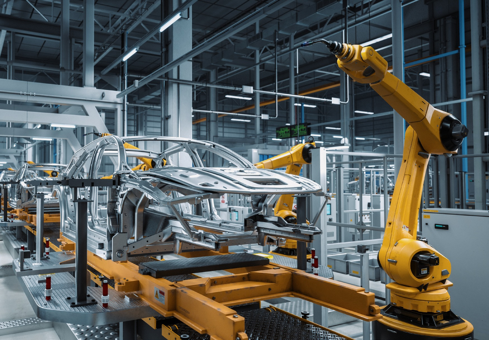
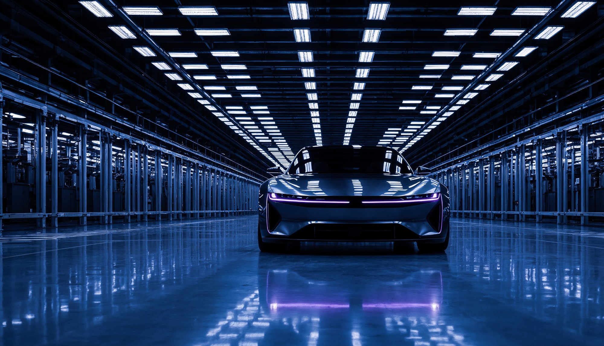
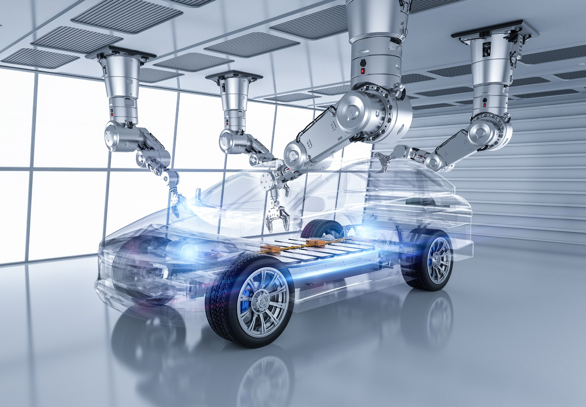
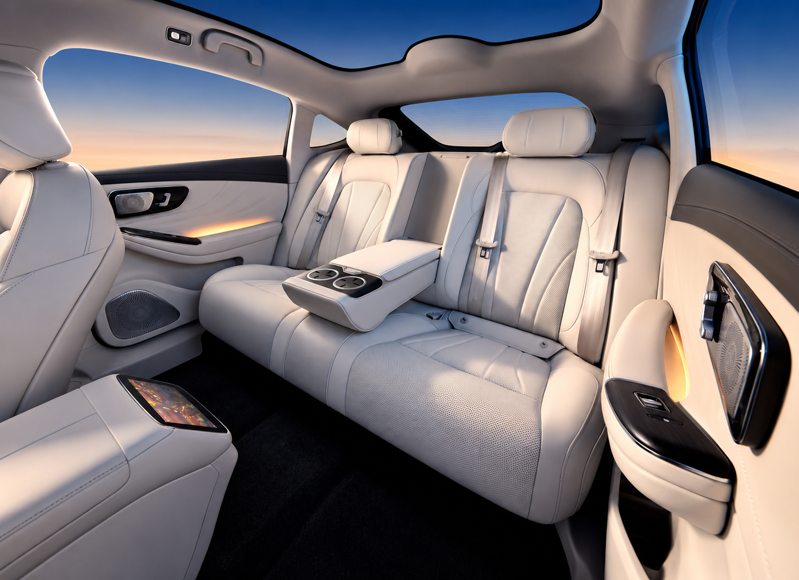
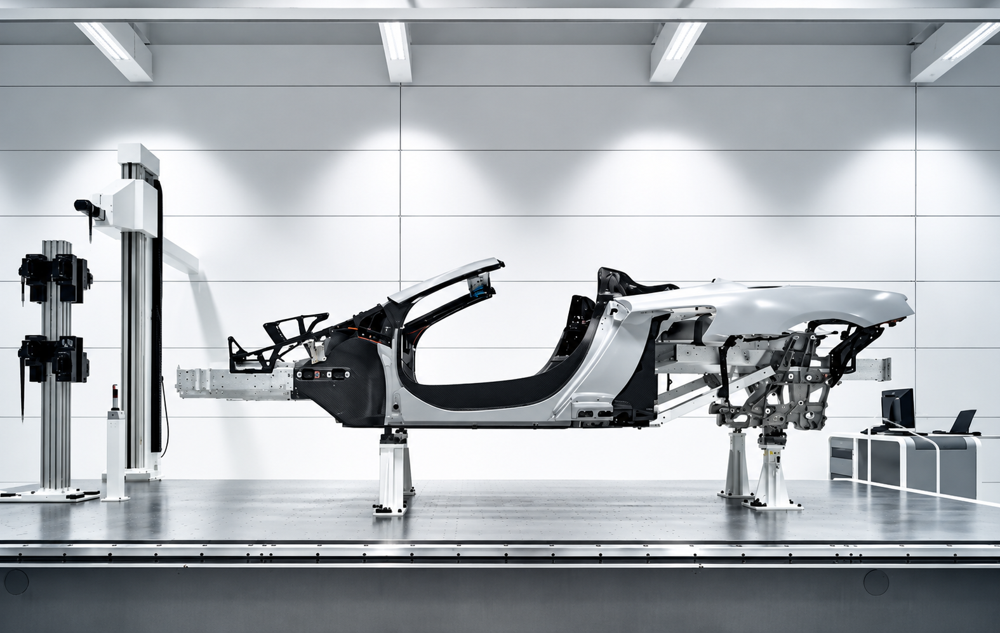
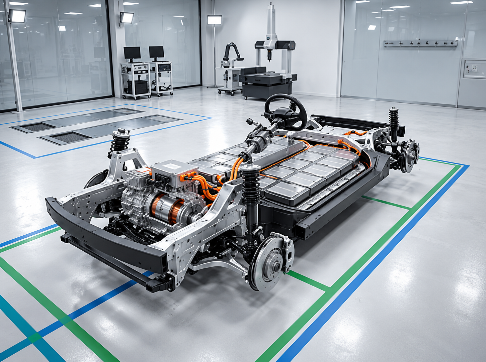
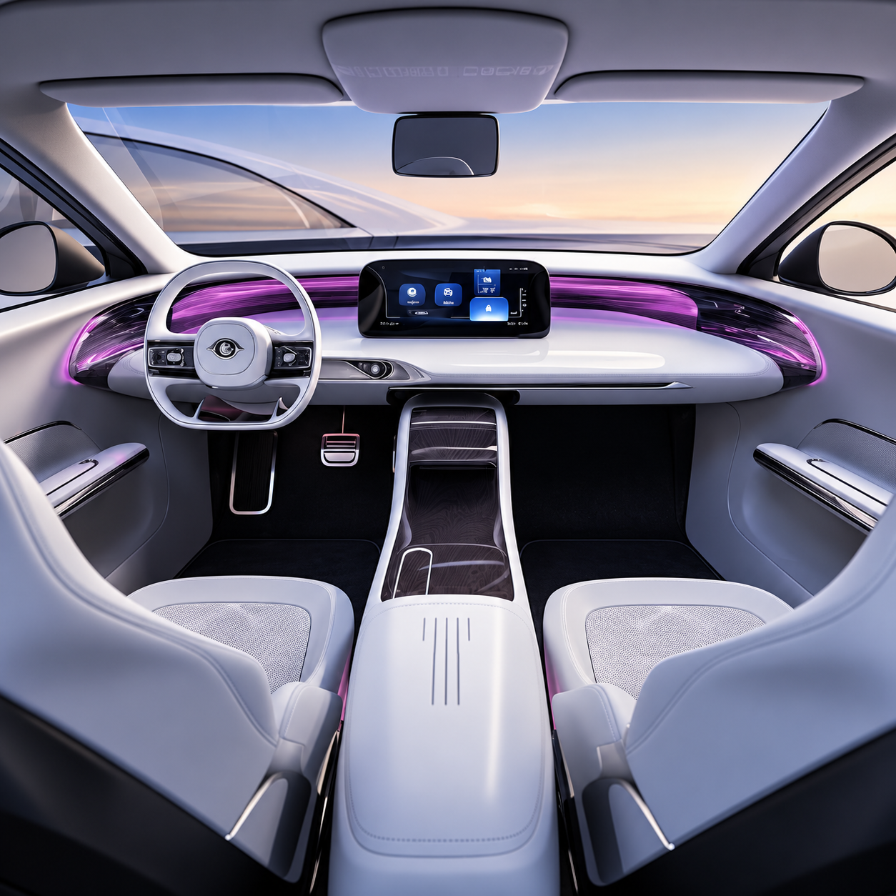
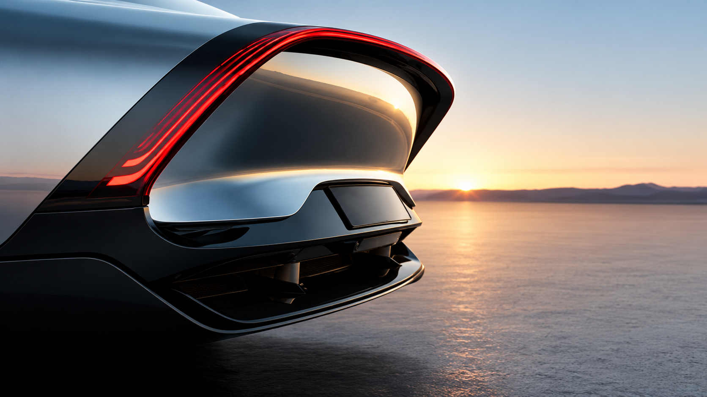
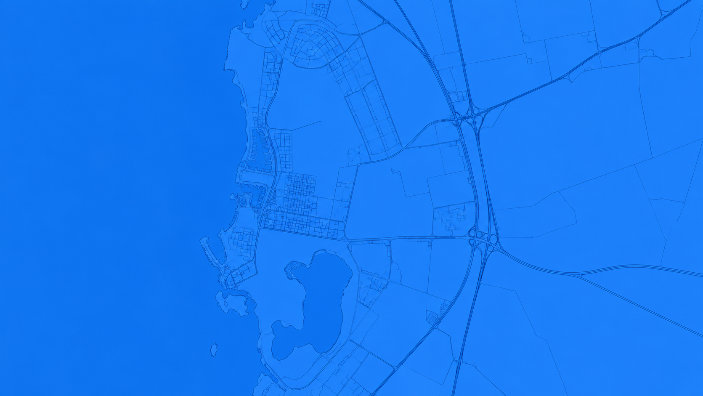

Land A physical base for supplier manufacturing operations.
How TSH worksGLOBAL EXPERTISE. LOCAL CAPABILITY.
TASARU Supplier Hub helps global automotive suppliers establish manufacturing capabilities in Saudi Arabia.
THE FUTURE IS BUILT TOGETHER
TASARU Supplier Hub gives global automotive suppliers a dedicated platform to establish critical manufacturing capabilities within the Kingdom.

Land A physical base for supplier manufacturing operations.
How TSH works
Real estate Manufacturing space for the five-supplier platform.
How TSH works
Equipment Production equipment supporting local manufacturing capability.
How TSH works
Seating
Seating brings comfort, support and function into the vehicle cabin. Localising this capability brings an essential part of the vehicle closer to Saudi automotive production.

Body-in-white
The body-in-white forms the structural foundation of a vehicle. Establishing this manufacturing capability locally supports a critical stage of the automotive value chain.

Chassis
Chassis components provide the foundation for vehicle assembly. Local capability strengthens the connection between specialist component manufacturing and the OEM production line.

Interior plastics
From cabin surfaces to functional interior parts, plastic components shape the in-vehicle experience. Local manufacturing brings this capability into the Saudi supply chain.

Exterior plastics
Exterior plastic components combine form and function across the vehicle. Localising their manufacture expands the range of components available within the Kingdom's automotive ecosystem.
THE SUPPLIER ECOSYSTEM
Explore the suppliers ↓
LOCATION
Located in MASARAT Mobility Park in King Abdullah Economic City, TSH connects its supplier platform to the wider Saudi automotive environment.
Explore the location